- Atrybut Jest to cecha lub własność obiektu. W kontekście relacyjnych baz danych, atrybut to pojęcie odpowiadające danej w tabeli. Każda tabela składa się z wierszy i kolumn, przy czym każda kolumna reprezentuje określony atrybut lub pole danych.
- Atrybuty danej relacji Są to atrybuty, które występują w danej relacji. Mogą to być zarówno atrybuty kluczowe, jak i niekluczowe.
- Baza danych Jest to zbiór powiązanych ze sobą danych. W kontekście relacyjnych baz danych, baza danych składa się z jednej lub więcej relacji.
- Duplikat W Zbiorze Jest to element, który występuje w zbiorze więcej niż jeden raz. W kontekście relacyjnych baz danych, duplikaty są zabronione, ponieważ utrudniają przechowywanie i zarządzanie danymi.
- Dziedzina/Typ Dziedzina atrybutu to zbiór wartości, które może przyjmować dany atrybut dziedzina atrybutu będą numery od 1 do 49. Typ atrybutu to określenie, jakiego typu danych może przyjmować wartość atrybutu.
- Egzemplarz danej klasy Jest to konkretny obiekt danej klasy. W kontekście relacyjnych baz danych, egzemplarzem danej klasy jest rekord w tabeli.
- Encja (ang. entity) Jest to inna nazwa dla relacji.
- Encja (tabeli) Jest to pojęcie odpowiadające tabeli w kontekście relacyjnych baz danych.
- Instancja Jest to konkretny obiekt danego typu. W kontekście relacyjnych baz danych, instancją jest rekord w tabeli.
- Kandydujący klucz Jest to atrybut lub zestaw atrybutów, który może być użyty do identyfikacji unikalnego rekordu w tabeli.
- Klasa
Jest to zbiór obiektów o podobnych właściwościach. W kontekście relacyjnych baz danych, klasa odpowiada tabeli. - Klucz naturalny a sztuczny Klucz naturalny to atrybut lub zestaw atrybutów, który występuje naturalnie w danych. Klucz sztuczny to atrybut lub zestaw atrybutów, który jest dodany do tabeli w celu zapewnienia unikalności rekordów.
- Klucz obcy Jest to atrybut lub zestaw atrybutów, który identyfikuje rekord w innej tabeli.
- Klucz głównego w tabeli Jest to atrybut lub zestaw atrybutów, który jest używany do identyfikacji unikalnego rekordu w tabeli.
- Klucze Kluczem relacji nazywamy zbiór atrybutów, który jednoznacznie identyfikuje każdy rekord w relacji.
- Kolumna Jest to pojęcie odpowiadające atrybutowi w kontekście relacyjnych baz danych.
- Krotka Jest to zbiór wartości atrybutów dla danego rekordu w tabeli.
- Model ER - Teoria Relacji Model ER (Entity-Relationship) to model danych, który jest używany do opisu struktury relacyjnych baz danych.
- Model relacyjny bazy danych Model relacyjny to model danych, który opiera się na zbiorach relacji. W kontekście relacyjnych baz danych, relacja odpowiada tabeli.
- Polecenie SQL Jest to instrukcja używana do wykonywania operacji na danych w relacyjnej bazie danych.
- Primary Key (Klucz podstawowy) Jest to klucz, który jest używany do identyfikacji unikalnego rekordu w tabeli.
- Rekord Jest to pojęcie odpowiadające wierszowi w kontekście relacyjnych baz danych.
- Relacja Jest to zbiór rekordów o identycznej strukturze. W kontekście relacyjnych baz danych, relacja odpowiada tabeli.
- Relacja jeden do jednego - związek 1:1 Jest to relacja między dwiema tabelami, w której każdy rekord w jednej tabeli jest powiązany z dokładnie jednym rekordem w drugiej tabeli.
- Relacja jeden do wielu/u - związek 1:N (jeden do wielu) Jest to relacja między dwoma tabelami, w której każdy rekord w jednej tabeli może być powiązany z wieloma rekordami w drugiej tabeli.
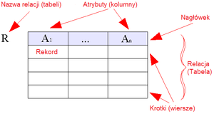
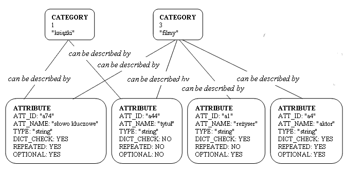
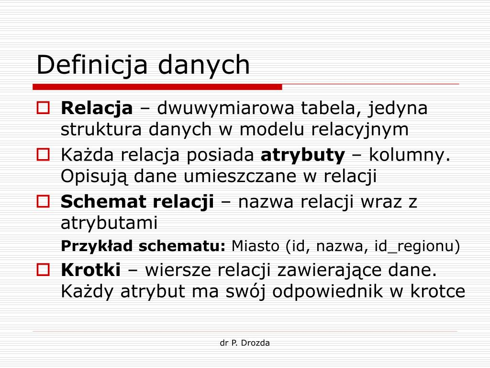
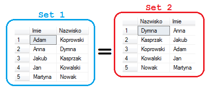
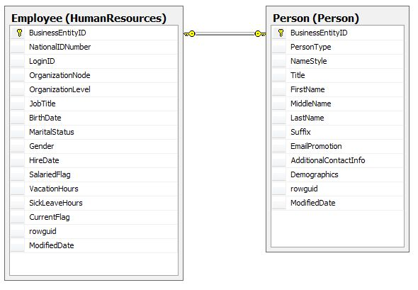
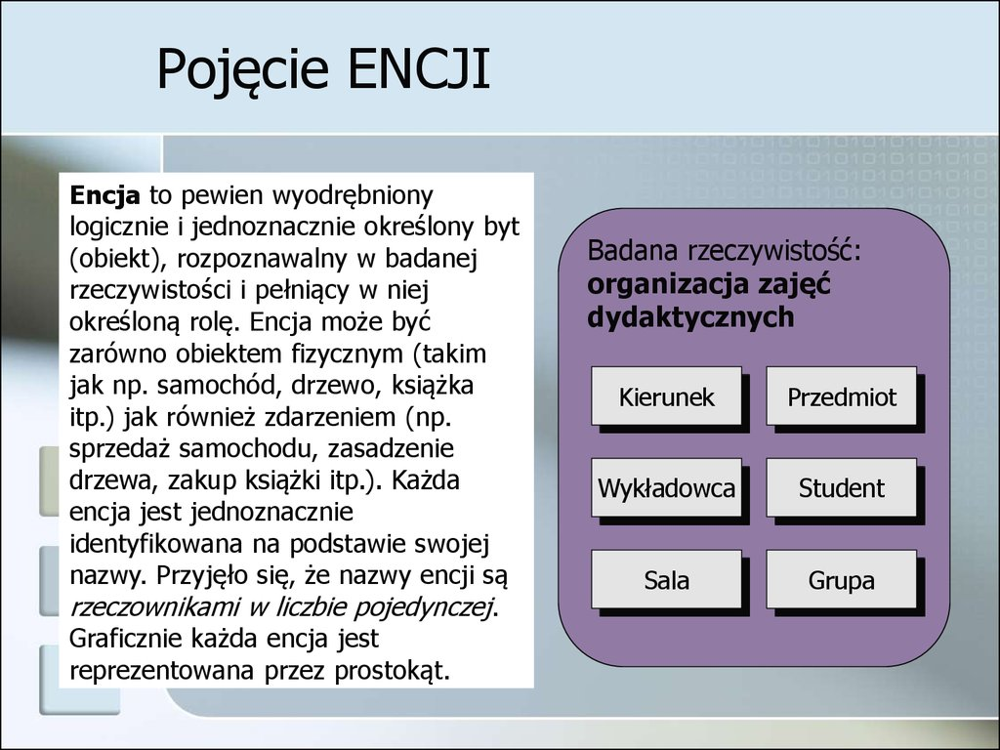
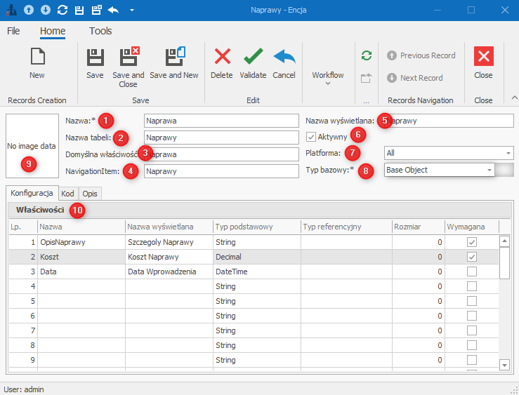
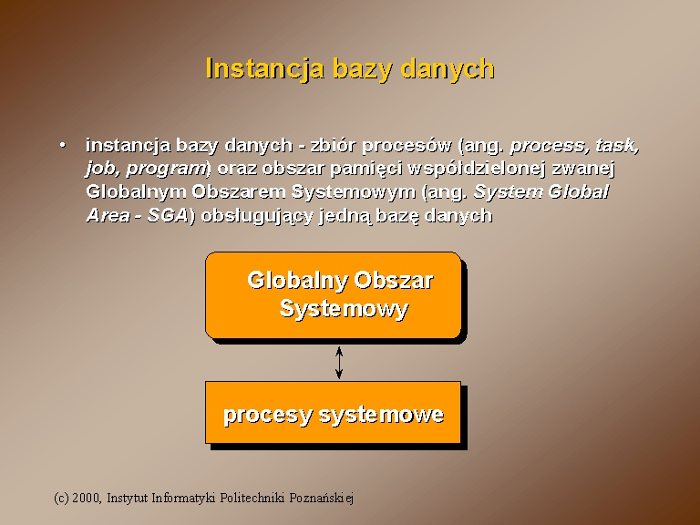
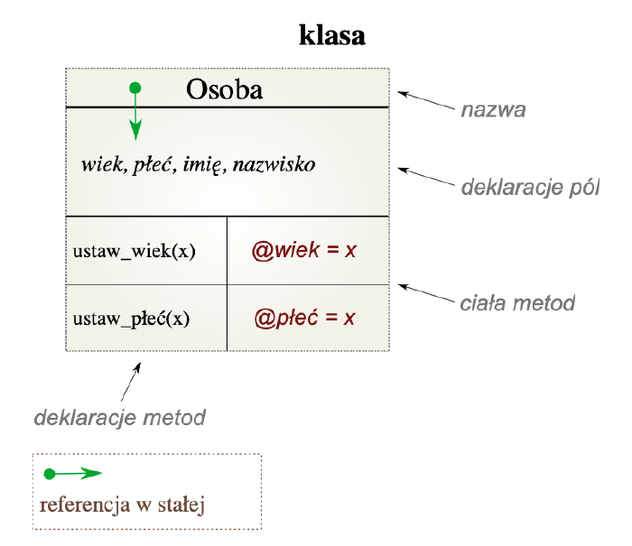

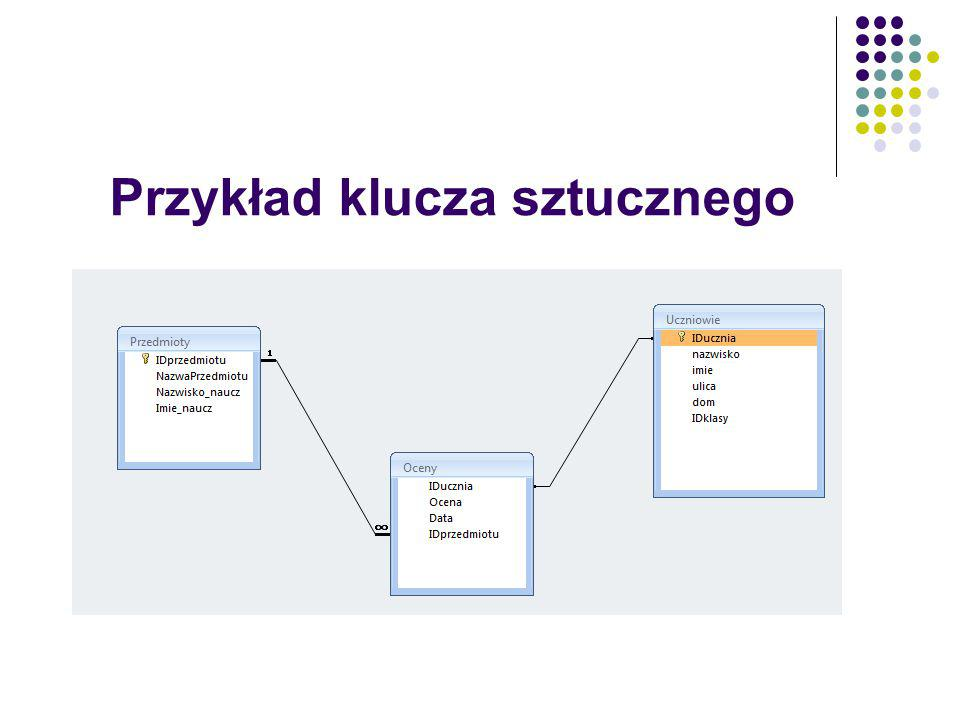
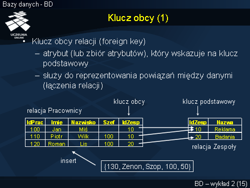
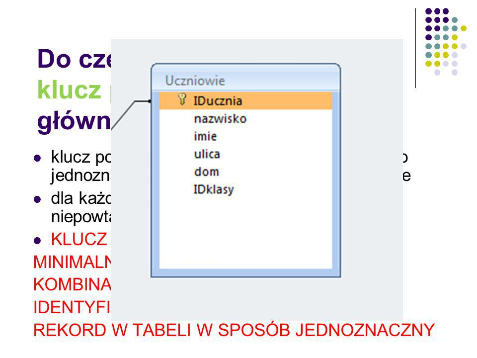


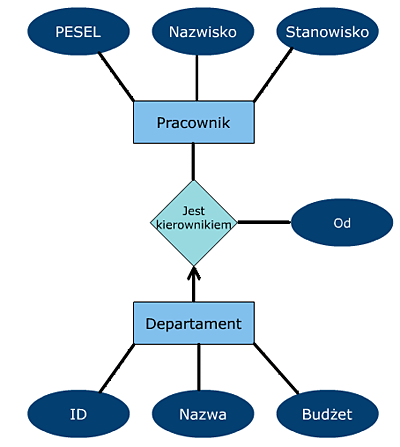
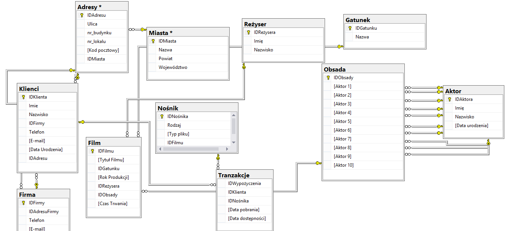
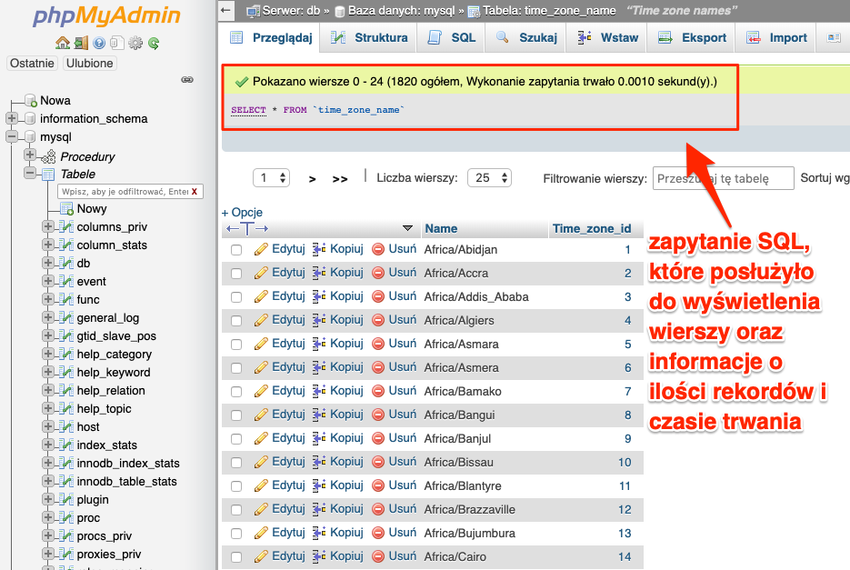
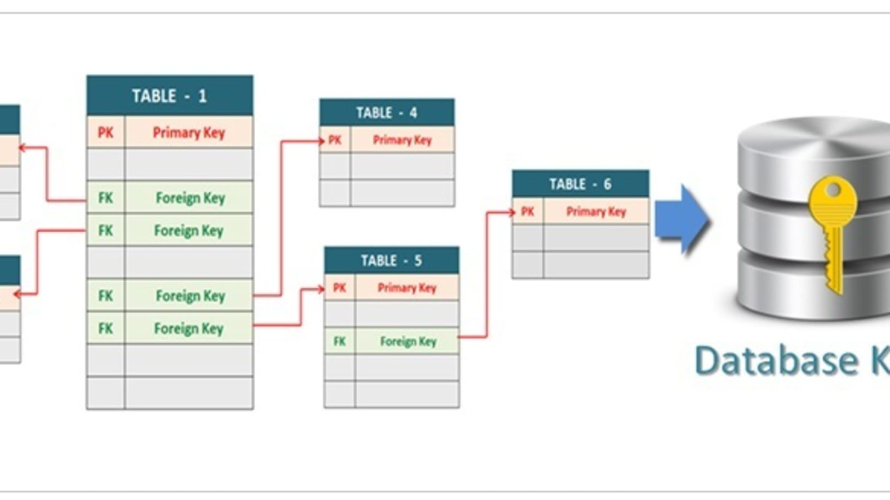
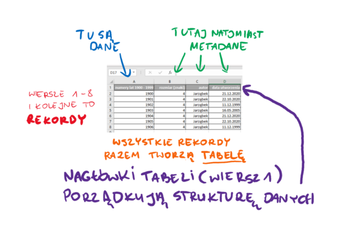
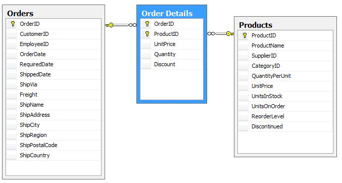
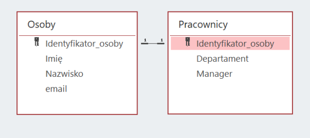
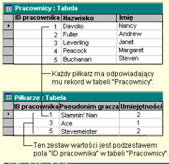